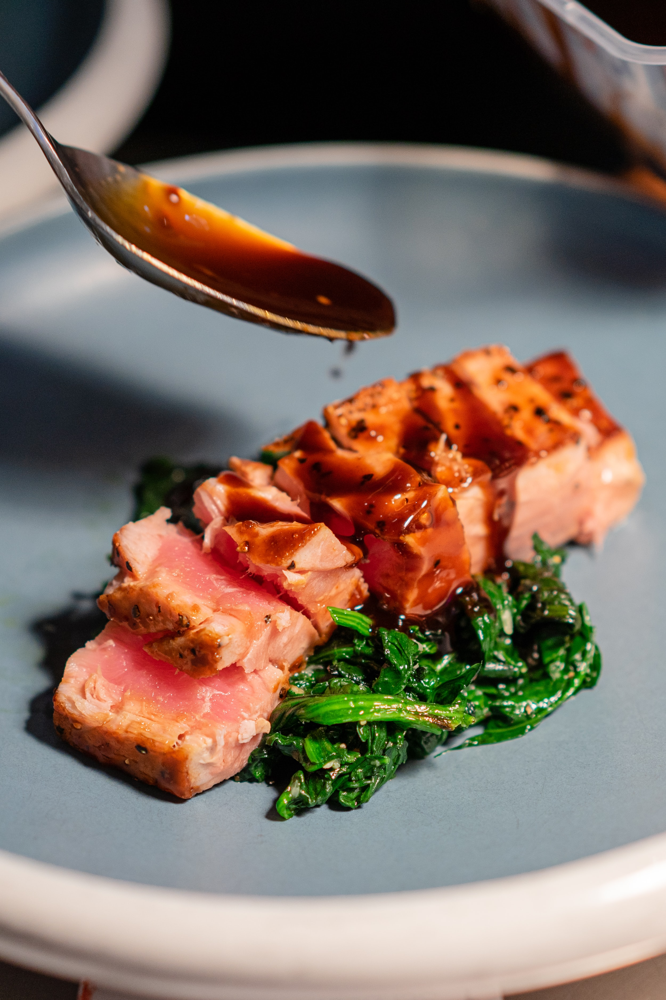

Teriyaki Sauce

Description
List of ingredients for a homemade teriyaki sauce commonly used with chicken, fish, dumplings, shrimp, and other meat dishes.
Ingredients
- 1 cup water
- 1/4 cup soy sauce
- 5 teaspoons of brown sugar
- 1 tablespoon honey
- 1/2 teaspoon ground ginger
- 1/4 teaspoon garlic powder
- 2 tablespoons cornstarch
- 1/4 cup cold water
Steps
-
Combine 1 cup water, soy sauce, brown sugar, honey, ginger, and garlic powder in saucepan over medium heat.
Cook until heated throughout about 1 minute.
-
Mix cornstarch and 1/4 cup cold water in a cup, stir until dissolved. Add to saucepan and stir sauce until thickened about 5-7 minutes.